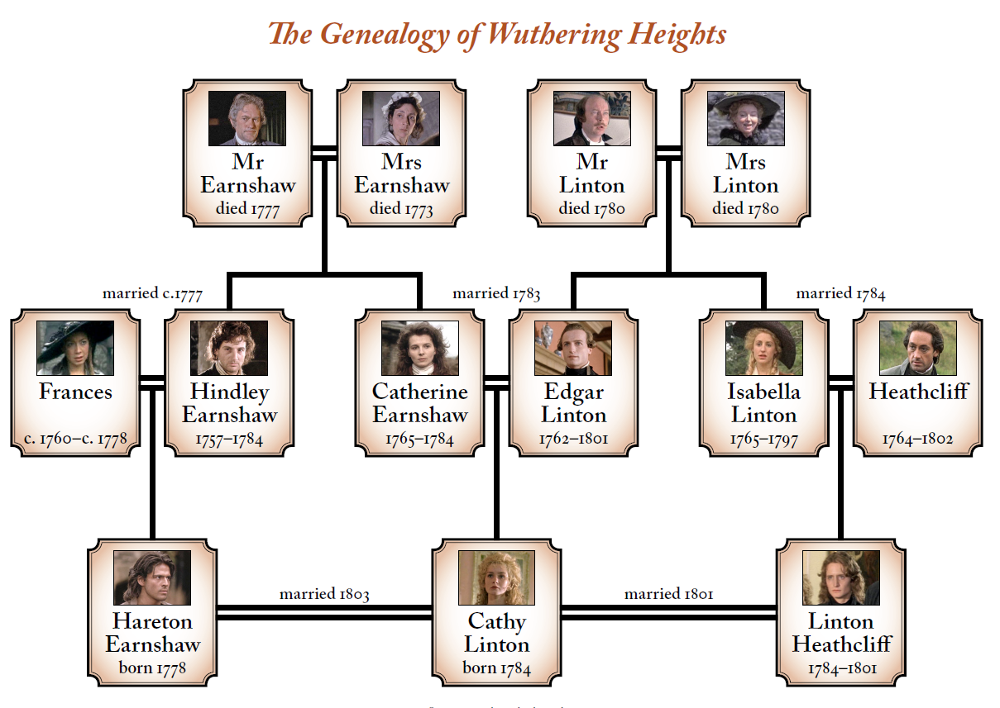

Lockwood | Narrator of the story, tenant of Thrushcross Grange. Lockwood is an out-of-towner who’s interested in renting the Thrushcross Grange, so he travels to Yorkshire to have a formal meeting with the property’s owner, Heathcliff. |
Ellen (Nelly) Dean | Housekeeper of Wuthering Heights/Thrushcross Grange, tells Lockwood the story he narrates. Most of the book’s perspectives are drawn from the eyes of this woman. Ellen Dean, or Nelly, knows a great deal about the history of both the Earnshaws and the Lintons. |
Heathcliff | A dark outsider brought into the family by Mr. Earnshaw, father of Linton Heathcliff. As a child, Heathcliff is described as cute and likable – and this might be part of the reasons he catches the eyes of his adopter, and later his half-sister, Catherine. However, Heathcliff soon grows into a callous, not wicked, young, mean man – driven by his resolve to exact revenge on Hindley for degrading him, and on Edgar, for taking Catherine away from him. |
Mr Earnshaw | Mr. Earnshaw is a kind and generous character, who adopts and brings homeless, poor Heathcliff into his household, and takes responsibility for him together with two children, Hindley and Catherine. |
Catherine Earnshaw (Linton) | Daughter of Mr. Earnshaw, wife to Edgar Linton, mother of Catherine Linton, Heathcliff's love. She is the sister to Hindley and the daughter of Mr. Earnshaw. Beautiful and strong-willed, Catherine is the charm of the family. And unlike her brother, Hindley, she loves and is quite fond of Heathcliff from the onset. |
Edgar Linton | Son of Mr. Linton, husband to Catherine Earnshaw (Linton), father of Catherine Linton. He is the son of the Lintons, the first owners of Thrushcross Grange. He is an educated, cultured, charming young man. He comes into the picture sweeping Catherine out of her feet with his clean, cultured manners and advanced lifestyle. |
Isabella Linton (Heathcliff) | Sister of Edgar Linton, wife of Heathcliff, mother of Linton Heathcliff. Isabella is a sister to Edgar, and like him, she is enlightened and informed. She, her brother, and their Thrushcross Grange are nearly starkly different from those of ‘Wuthering Heights’ and its citizens. She marries Heathcliff, but suffers horrible marital treatments, often thinking about running away |
Hindley Earnshaw | Brother of Catherine Earnshaw, father of Hareton Earnshaw. Hindley is Mr. Earnshaw’s biological son who, for most of the book, goes into warring with Heathcliff, as he sees him as a huge obstacle to obtaining his full right as an Earnshaw. |
Catherine Linton | Daughter of Catherine Earnshaw (Linton) and Edgar Linton, wife of Linton Heathcliff, wife of Hareton Earnshaw. Just like her mother, Cathy is described as beautiful, stubborn, and a go-getter. She is educated and also quite intelligent. |
Linton Heathcliff | Son of Heathcliff and Isabella Linton (Heathcliff), husband of Catherine Linton. He is the only child and son of Heathcliff and Isabella, born frail and sickly. After he comes of age, his father arranged a marriage between him and Cathy, his cousin and Catherine’s child with Edgar, just so he could control the Thrushcross property. |
Hareton Earnshaw | Son of Hindley Earnshaw, husband of Catherine Linton. Hareton is the male child of Hindley from his marriage to Frances. For most of the book, Hareton is abandoned and not shown the love that he deserves. |

"You teach me now how cruel you’ve been—cruel and false. Why did you despise me? Why did you betray your own heart, Cathy? I have not one word of comfort".
"I have to remind myself to breathe—almost to remind my heart to beat!"
"Whatever our souls are made of, his and mine are the same"
😍
| Number | First Name | Last Name | |
|---|---|---|---|
| 1 | Peter | Larson | |
| 2 | Helen | Karlson | |
| 3 | Karl | Leinz |